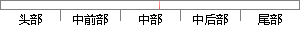

可分为无线电波、可见光、紫外线等，
片段位置图

相似结果
相似片段：
13976774 13976775 13976776 9816091 Stonelib.com Uowo.cn Acibaba.com 13976818-Stonelib.com 13976858-Uowo.cn 13976858-Acibaba.com 电磁波对人的危害_爱问知识人 根据光谱分析，电磁波可分为无线电波，可见光，紫外线等，电磁波对人体有害毋庸置疑，问题是什么样的电磁波对 ... iask.sina.com.cn/b/16204503.html - 电磁波对人体的危害 - 圖書館管理系統專業服 ... 电磁波还会
| 对比库： | WriteCheck云资源库 |
| 来源： | www.oobo.com.cn 查看来源 |
| 发布时间： | 2013-02-27 |
| 相似率 | 100% （严重抄袭） |